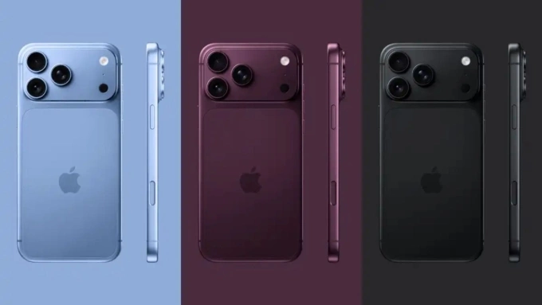
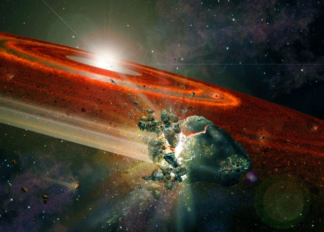

Từ iPhone 15, cổng kết nối USB-C đã biến chiếc điện thoại thành nguồn sạc dự phòng 4,5W...

Một thiên thạch kỳ lạ được tìm thấy ở sa mạc Sahara rất có thể là tàn tích của một tiền hành tinh đã tan vỡ.
Man Utd cứng rắn với Barcelona, quyết không để Rashford bị ép giá
Elliot Anderson và cái bẫy 100 triệu bảng của tuyển Anh
Cafu: Vì sao ông được xem là hậu vệ phải vĩ đại nhất?
THÍCH THỂ THAO
MẠNG XÃ HỘI
Man Utd cứng rắn với Barcelona, quyết không để Rashford bị ép giá
Elliot Anderson và cái bẫy 100 triệu bảng của tuyển Anh
Cafu: Vì sao ông được xem là hậu vệ phải vĩ đại nhất?